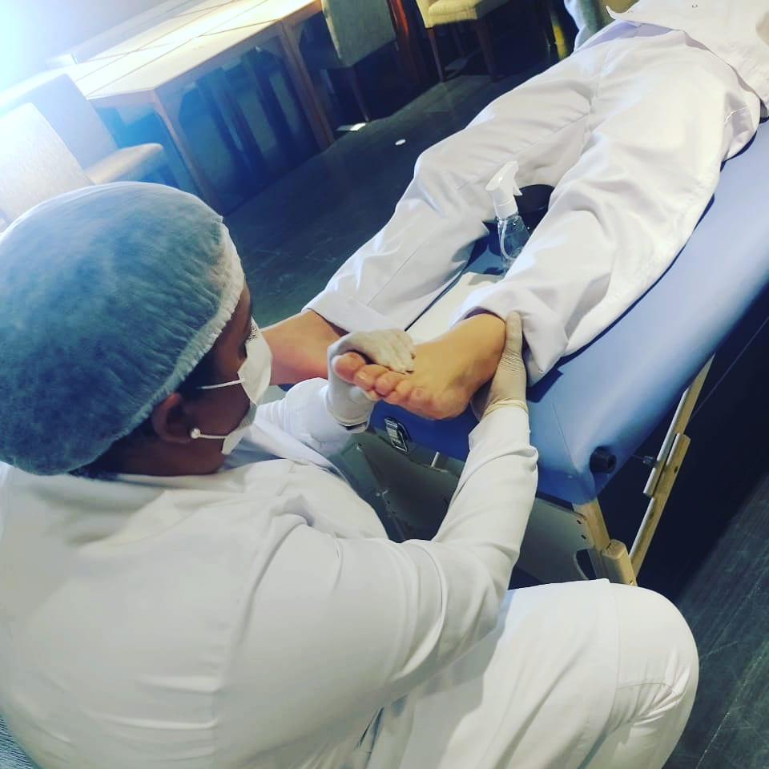

Podologista
O podologo é um profissional da área da saúde que trata dos pés e tornozelos.
Trata patologias dos pés com técnicas inovadoras para melhorar o bem-estar geral
dos pacientes. Os podólogos dedicam seu tempo no estudo, diagnóstico, prevenção e
tratamento de distúrbios, doenças e lesões dos pés.
Profissão regulamentada de acordo com a PL 151/2015, aprovada dia 10 de Março de
2022. www12.senado.leg.br

Doenças Tratadas
As doenças tratadas com mais frequência por um podólogo, são:
Joanetes
Calosidades
Feridas
Unhas encravadas
Verruga plantar(olho de peixe)
Rachaduras no calcanhar
Fissuras
Micoses
Úlcera dos pés
Pé diabético
Pele seca
Excesso de transpiração
Mau cheiro(chulé)